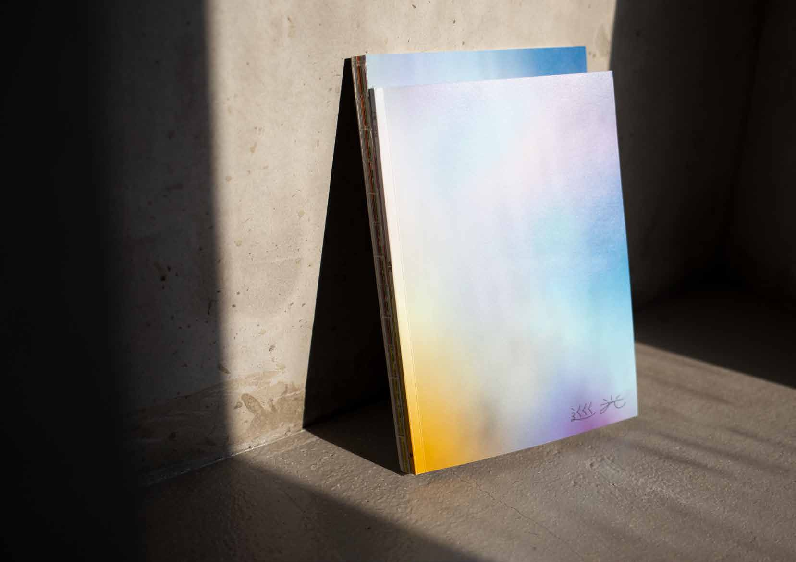
01 · 刊物與裝幀設計 p.06–13竹嶺校刊 56 期《巡光》
以「巡光」為題，章節依循光譜概念編排。封面靈感源自日本攝影師水谷吉法《Voices of Flowers》失焦光暈效果；裝幀採用膠裝與裸背線裝雙冊合一，並首次於校刊內頁運用銀色油墨。
現就讀國立新竹高級中學。對於視覺設計與使用者體驗有熱情，擅長從日常觀察、在地文化中找尋靈感，並轉譯成幾何的視覺語言。
曾任竹嶺校刊美術編輯及竹嶺班聯設計長，負責統籌刊物編輯、規劃視覺規範與活動視覺，累積跨媒介整合的經驗。希望設計不只是解決問題的途徑，更能透過設計過程，回應社會脈動，開啟更多對話與思考的可能。
Editorial & Book Design
Visual Identity Design
Social and Digital Media Design

01 · 刊物與裝幀設計 p.06–13以「巡光」為題，章節依循光譜概念編排。封面靈感源自日本攝影師水谷吉法《Voices of Flowers》失焦光暈效果；裝幀採用膠裝與裸背線裝雙冊合一，並首次於校刊內頁運用銀色油墨。
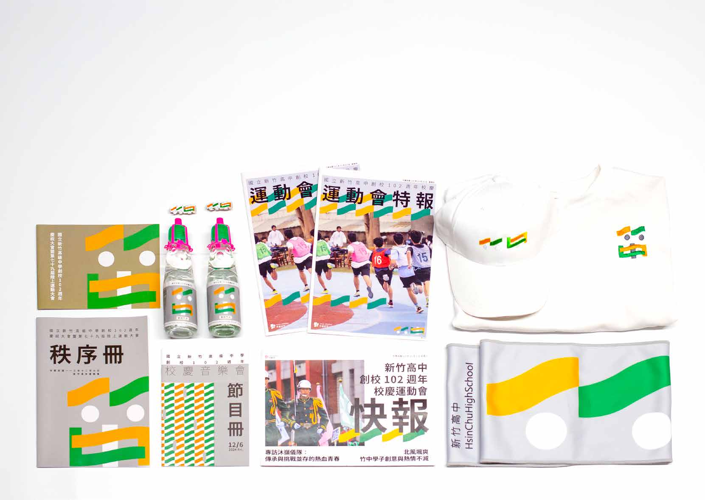
02 · 視覺識別設計 p.22–27以「新竹風」作為視覺動線，運用校徽中的橘與綠構築自由線條，文字參考校徽「中」字方正特點。串連學務處、圖書館、家長會、班聯會與校刊社，延伸至秩序冊、音樂會手冊與販售周邊。
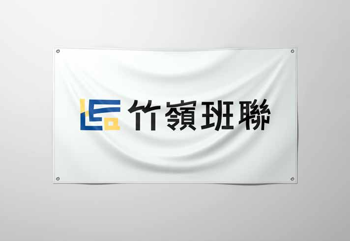
02 · 視覺識別設計 p.34–39靈感源自校園平面圖多棟建築地基呈現「L」字形與地勢起伏特徵，將英文縮寫「HCCA」與校舍特色結合；標準字主筆自左下向右上延伸，搭配信任深藍與創新活力黃，建立完整識別規範手冊。
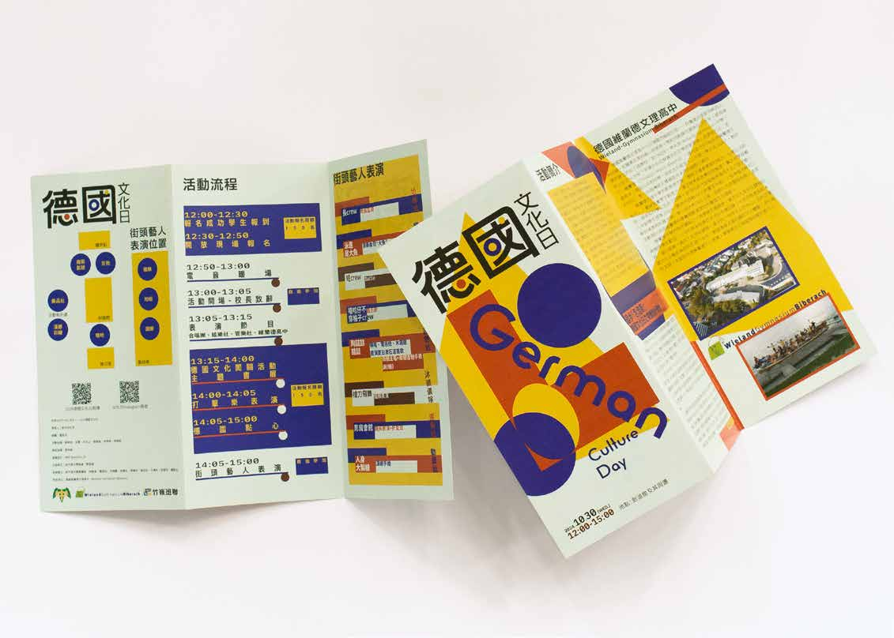
02 · 視覺識別設計 p.28–31以康丁斯基「藍圓、紅方、黃三角」造形理論為基礎，標準字參考 Herbert Bayer 經典字體 Universal Bayer 轉化中文字「口」形連筆與圓圈跳色，呼應歐洲街頭藝人表演的趣味與包浩斯調性。
打造一件「穿在路上也不尷尬的流行 T-shirt」。將「文組畢業去刷條碼」的負面標籤轉化為班級標誌，背面左下角刻意設計像忘記撕的洗標；班旗邀請全班共同描圖繪製，榮獲班旗競賽特優。
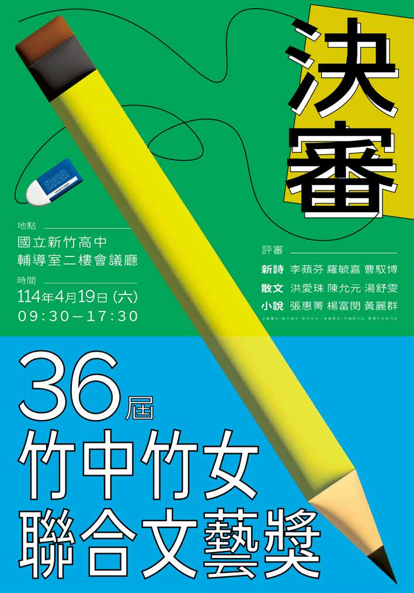
02 · 視覺識別設計 p.32–33在人工智慧當道的此刻，以「書寫」為靈感，試圖帶領參與者回歸創作起點，重拾平凡卻充滿力量的鉛筆與橡皮擦，在稿紙格線上創作屬於高中生的青春作品。
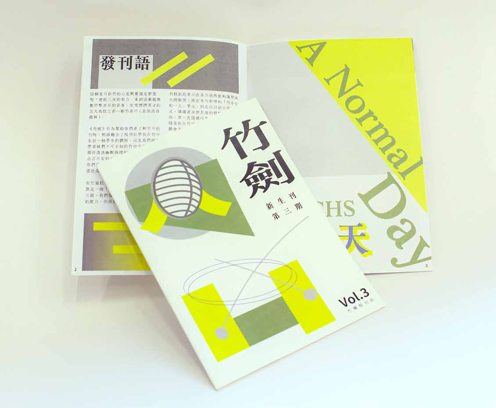
01 · 刊物與裝幀設計 p.16–19幫助新生了解竹中生活的領航刊物。一改往期具象插圖，以趣味幾何色塊與線條呈現竹中日治時期曾推廣過的劍道，並新增「竹中生的一天」日記小說單元與校園生存地圖。
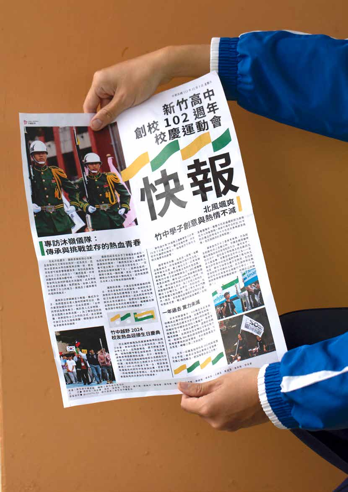
01 · 刊物與裝幀設計 p.14–15快報在校刊社與攝影社、圖書館支援下，於 6 小時內完成訪問、攝影與排版，於校慶當日下午即時發刊；特報首次以「小誌」形式呈現，延伸校慶主視覺元素連貫現場氛圍。
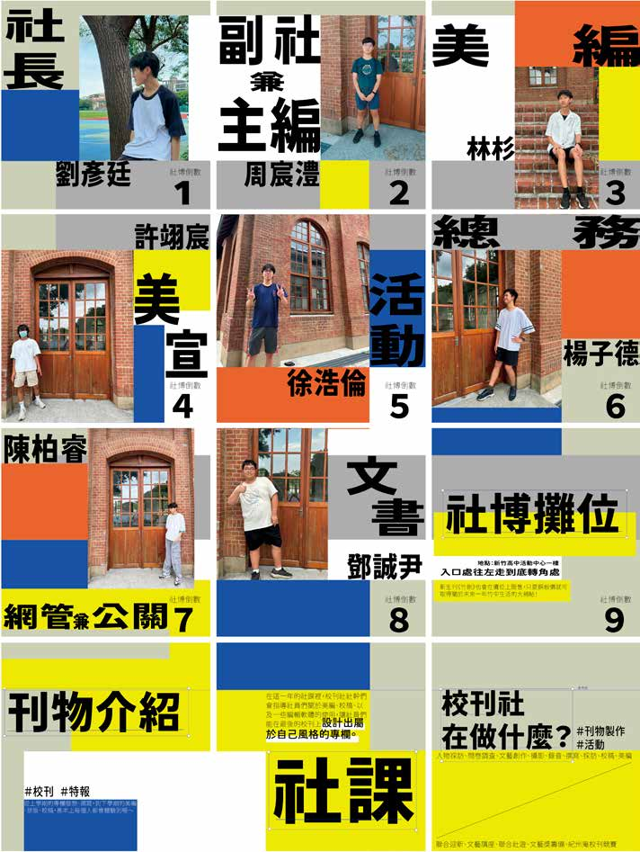
p.44–47包含竹嶺校刊社幹部介紹與社博倒數九宮格貼文、Vol.55《時光洄導 Loop》榮獲全國高中校刊金質獎暨紀州庵冠軍電子海報、《線徑》紀錄片縮圖與《巡光》光暈三連貼文。
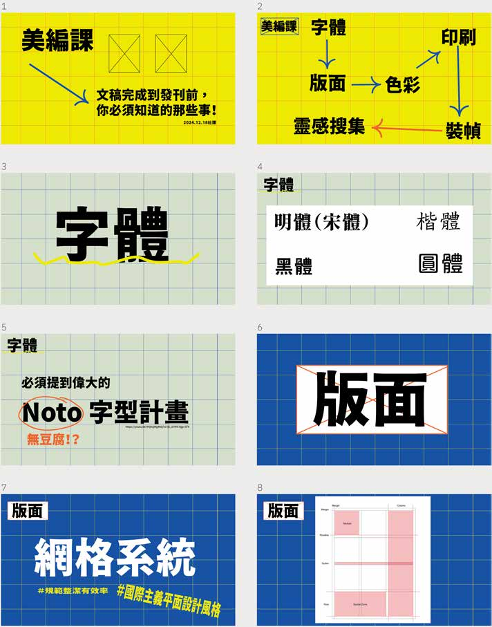
p.50–51負責校刊社美編課程教學，以「網格」作為視覺基底呈現編輯過程。課程涵蓋字體（Noto 字型計畫）、版面（國際主義網格系統）、色彩（CMYK）、印刷、裝幀與靈感搜集六大章節。
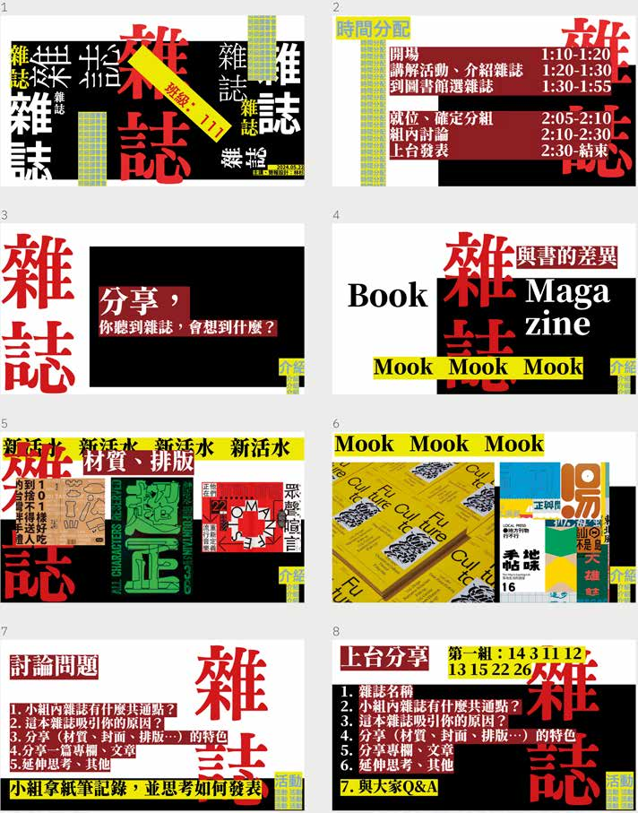
p.48–49透過強烈對比的字體解構與色塊拼貼，引導同學認識雜誌（Magazine）、Mook 與書籍在材質、開本與排版上的差異，並策劃「未來」主題尋書與閱讀討論流程。
統籌《竹嶺校刊 56 期：巡光》裝幀與版面設計、編輯《竹嶺新生刊第三期：竹劍》與 102 週年校慶運動會快報／特報；團隊刊物榮獲全國高中校刊競賽「金質獎、美編獎」及紀州庵校刊競賽「冠軍、在地關懷獎」，並負責社內美編與 InDesign 實作課程教學。
從零建立「竹嶺班聯組織視覺識別系統」，制定標誌、標準字、色彩系統與《新竹高中班聯會視覺識別系統規範手冊》，並統籌社群公告、幹部介紹與校園活動視覺規範。
受邀操刀創校 102 週年校慶主視覺（串連五大單位、社群瀏覽破五萬人次）、2024 德國維蘭德高中回訪「德國文化日」主視覺，以及第 36 屆竹中竹女聯合文藝獎決審主視覺；另以 79 屆二班視覺識別榮獲全校班旗競賽「特優」。
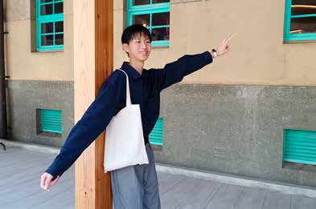